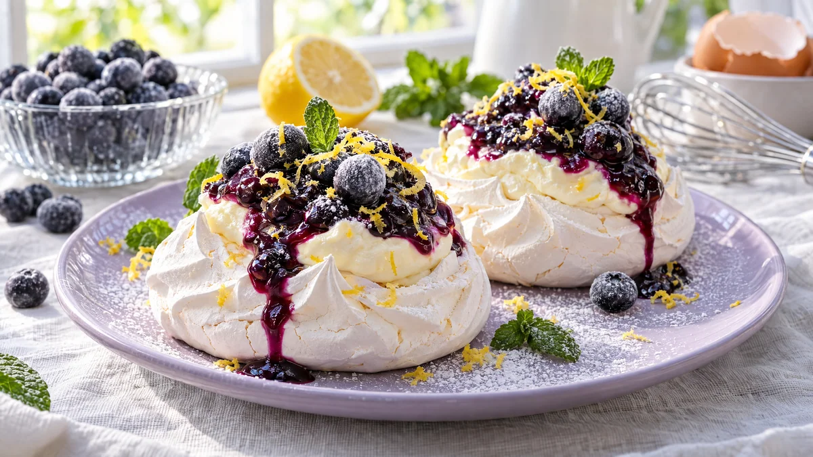

RESTFEST · RECEPTDessert
Minipavlovor med citronkvarg och blåbär
Några överblivna äggvitor, socker, en burk kvarg och frysta blåbär. Det blir krispiga små moln som är sega inuti, fyllda med syrlig citronkvarg och glänsande blåbärskompott. Perfekt efter rödbetspytten, som lämnar exakt fyra äggvitor över.
- Förberedelse
- 25 min
- Tillagning
- 60 min + minst 1 tim svalning i ugnen
- Portioner
- 4 (8 st)
- Nivå
- Medelsvårt
 Det här behöver du
Det här behöver du
Tryck på + vid det du behöver köpa.
Maränger
Blåbärskompott
Citronkvarg
Till servering
Gör så här
- Sätt ugnen på 120 grader. Rita 8 cirklar, ca 7 cm, på ett bakplåtspapper och vänd pappret så att pennan hamnar på undersidan.
- Torka ur en bunke och elvispens visp med lite ättika på hushållspapper. Minsta fettrest gör att vitorna inte blir fasta.
- Vispa äggvitorna på medelhög hastighet till ett mjukt skum. Höj till hög hastighet och tillsätt sockret en matsked i taget. Vispa 8–10 minuter, tills marängen är stel och blank och sockret har löst sig. Gnid lite maräng mellan fingrarna, den ska inte kännas grynig.
- Vänd ner ättika, potatismjöl och vaniljsocker med en slickepott.
- Klicka ut marängen på cirklarna. Gör en grop i mitten av varje med baksidan av en sked och dra upp kanterna i små spetsar.
- Grädda i nedre delen av ugnen i 60 minuter. Stäng av ugnen och låt marängerna svalna i ugnen med luckan stängd i minst 1 timme. Då spricker de inte.
- Koka upp blåbären och sockret i en kastrull och låt sjuda i 3 minuter. Rör ut potatismjölet i det kalla vattnet och rör ner det. Låt bara koka upp, ta av från värmen och rör ner citronsaften. Låt svalna.
- Vispa grädden till mjuka toppar. Rör kvarg, florsocker, citronskal och citronsaft slätt i en annan skål. Vänd ner grädden och ställ kallt.
- Fyll pavlovorna precis före servering, annars mjuknar marängen. Lägg en rejäl klick citronkvarg i varje grop och skeda över blåbärskompott.
Dekoration och servering
- Låt kompotten rinna lite över kanten på marängen för en vacker kontrast mellan vitt och lila.
- Toppa med några frysta, frostiga blåbär, lite rivet citronskal och ett myntablad.
- Pudra lätt med florsocker genom en sil.
- Servera två små pavlovor per person på ljusa tallrikar, gärna i pastell.
- Marängerna håller sig krispiga i upp till en vecka i en lufttät burk, så de kan göras i förväg.
Mått och ugnstemperaturer
Måtten är svenska (dl, msk, tsk, krm). Ugnstemperaturerna gäller vanlig ugn med över- och undervärme; med varmluft, sänk med 20 grader.